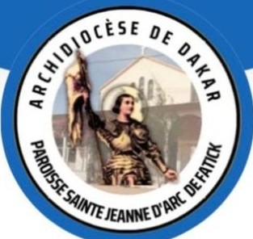
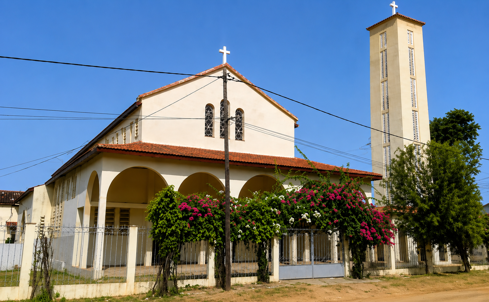

Formation
Des parcours accessibles pour accompagner les fidèles dans leur chemin de foi.

Paroisse Sainte Jeanne d'Arc de Fatick
Un lieu de foi, de formation et d’espérance
Un accompagnement fidèle pour les enfants, les familles et les jeunes au service de la vie paroissiale.
Des parcours accessibles pour accompagner les fidèles dans leur chemin de foi.
Un espace de dialogue, de partage et d’écoute au cœur de la paroisse.
Des actions concrètes au service de la communauté et de la promotion sociale.
Le centre accompagne les familles et les jeunes dans un cadre chaleureux, pédagogique et spirituellement vivant.
Chaque action porte la signature d’une communauté engagée, attentive et tournée vers l’avenir.

Le centre devient un espace de transmission de valeurs, de foi, de dignité et d’espoir.